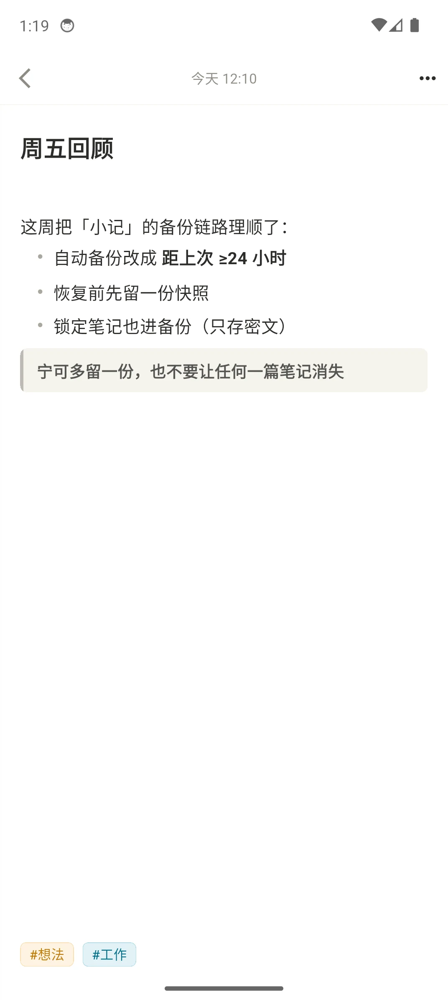
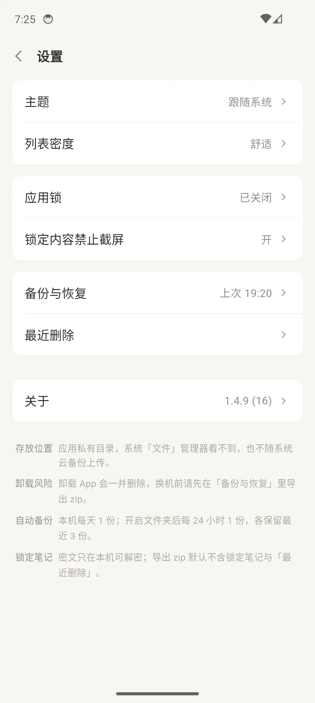
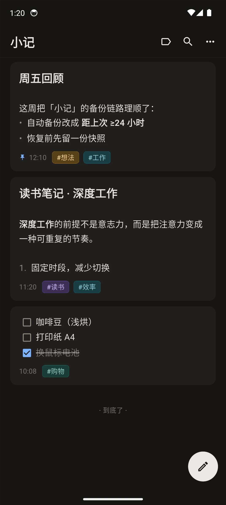

打开就能写
没有标题、没有层级。点开就记，输入即自动保存，退出不用确认。桌面小组件「记一条」一步进编辑页。
功能
把高频的小动作做顺，把危险的操作收口。没有多余面板，也没有社交功能。
没有标题、没有层级。点开就记，输入即自动保存，退出不用确认。桌面小组件「记一条」一步进编辑页。
浏览即最终效果，点哪块编哪块。收起键盘立刻回到阅读，不用来回切换模式。
标题、列表、待办、代码、引用、图片输入即成型；有序列表自动续号与重排。
SQLite FTS5 索引，中文按单字 + 二字切词，支持前缀匹配与高亮；标签可筛选、可删除，重要内容一键置顶。
拍照、选图、附件直接进笔记，按笔记归档在 assets/ 下，导出时一起带走。
跟随系统，也可以手动锁定浅色或深色；底部手势导航条自动融入页面。
安全
手机丢了、借给别人、被 screenshot —— 笔记应该在设计上就防住，而不是寄希望于「记得加锁」。
allowBackup=false）。Release 包的网络权限
回收站保留，可随时恢复
自动备份间隔，恢复前再留快照
GCM 加密，密钥绑定本机
截图
来自 Android 14 模拟器的真实界面，未做修饰。



数据
一篇笔记就是一个 Markdown 文件，按年和月分目录。笔记不是数据库里的记录，搜索索引只是随时可删的派生数据。
---
id: 20261106-0830-a1f2
created: 2026-11-06T08:30:00
updated: 2026-11-06T12:10:00
tags: 想法, 工作
pinned: true
---
# 周五回顾
这周把备份链路理顺了：
- 自动备份改成 **距上次 ≥24 小时**
- 恢复前先留一份快照
> 宁可多留一份，也不要让任何一篇笔记消失下载 APK 后按系统提示安装。首次可能需要允许「安装未知来源应用」。
新版本直接覆盖安装即可，笔记与设置保留；不需要卸载旧版。
Obtainium 添加仓库地址 oliverbuddy/private_notes，有新 Release 会提示升级。
常见问题
会。数据在应用私有目录里，卸载即删除。换机、刷机或卸载前请先「导出全部」保存 zip。
不能。锁定笔记正文用本机 Keystore 密钥加密，密钥不出设备。迁移时选择「导出（含锁定笔记，明文）」更合适，导入后重新锁定。
Release 包没有声明 INTERNET 权限，可以从 APK 的权限列表自行验证。应用内没有账号、同步、统计或远程配置。
自动与手动备份都在应用私有 backups/ 目录，每 24 小时最多一份，默认保留 3 份，恢复前还会另存一份快照。备份与数据同盘，设备损坏仍会一起丢失 —— 建议在设置里开启「自动导出到文件夹」，把备份写到 SD 卡或网盘同步目录；长期归档仍用「导出全部」。
暂时没有。当前只提供 Android APK，iOS 工程尚未生成。
不可以。项目采用 PolyForm Noncommercial 1.0.0，个人使用、学习、修改与分发免费；商业用途需要单独授权，可发邮件到 qiwei0727@gmail.com。